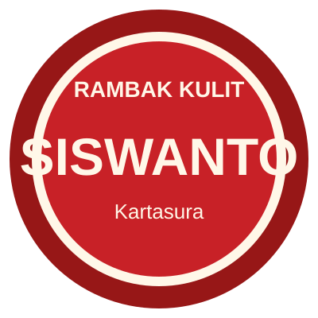

Reseller dan toko
Untuk kebutuhan stok rutin dan penjualan ulang.

Rambak SiswantoKerja sama mitra
Calon mitra dapat mengenali produk terlebih dahulu lalu menghubungi owner untuk kebutuhan jumlah besar, pemesanan rutin, atau kerja sama penjualan.

Untuk kebutuhan stok rutin dan penjualan ulang.
Untuk pelengkap menu, lauk, atau camilan pendamping.
Untuk hampers, oleh-oleh, kegiatan kampus, atau acara komunitas.